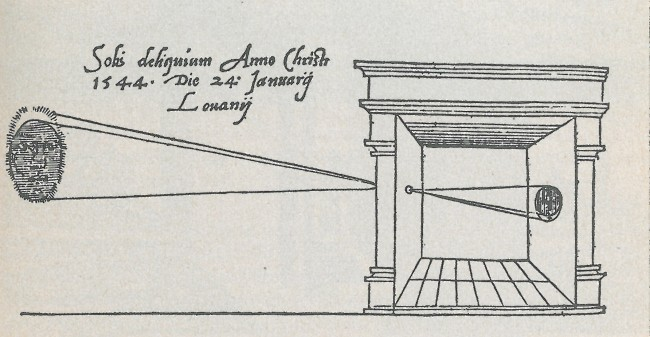

By: Alex Pan (abq) and Brian Kooperberg (acd)
The pinhole camera (otherwise known as 'camera obscura') is essentially a dark box with a pinhole on one face, and a screen on the opposite face. Light reflecting off an object is directed through the pinhole to the screen, and an inverted image of the object forms on the screen.
For this project, we use a shoebox as our dark box. After taping the outsides to prevent light from leaking in from gaps other than the pinhole, we fixed up the inside of the box. We used white paper as the screen and the rest of the box insides with black paper.
In order to capture the image being reflected from the pinhole on to the screen, we poked the lens of a digital camera through the box and used it to take pictures. Because so little light comes through the pinhole, we had to use a long exposure time (20 seconds) in order to process the full image. *Special thanks to Rafael Castro for letting us borrow his digital camera.
Here are a few images of our pinhole camera:
To test the optimal pinhole size, we tried letting light through 4 different hole diameter sizes: 0.1mm, 1mm, 3mm, and 5mm. Because larger holes let in more light, we expect that images produced by large pinholes will be bright. With a larger pinhole size, the projected circle of confusion at the image plane is larger, meaning that the cone of light rays coming into the box do not come to a perfect focus. So, the larger the pinhole size, the less sharp the image will be. On the contrary, the smallest diameter pinholes only let a few light rays pass into the box, so they should create dark images. The light rays will also be able to focus at a smaller point, creating a crisper image. Based on this, we expect the 5mm pinhole to give us the brightest, but blurriest image. Similarly, we expect the 0.1mm pinhole to produce the darkest, sharpest image. Here are a few different scenes where we tried using the pinhole camera. As you can see, the results are generally what we expected:
Original Scene
0.1mm
1mm
3mm
5mm
Original Scene
0.1mm
1mm
3mm
5mm
From the pictures above, it is impressive to see that the pinhole camera actually does a very good job of capturing a scene (with the right pinhole size). With the given exposure length of 20 seconds, the optimal pinhole diameter seems to be 3mm. The 0.1mm pinhole was too small to let enough light in, so the pictures were almost completely dark. The 1mm pinhole created very sharp images, but the result images were a bit too dark and obscured a decent amount of the scene. The 5mm pinhole was way too bright and blurry. 3mm was a happy medium between bright and in-focus
Now that we know that the optimal pinhole size is 3mm (at least for our specific pinhole camera), here are some more pictures with our pinhole camera!
Hearst Mining Circle
Engineering Building
Two Cars
Campanile Base
Given that we had a digital camera on our hands, we wanted to experiment and see what light painting was all about. Light painting refers to the effect created by taking a long exposure photograph while moving a hand-held light source. The long exposure time allows the image to capture the light source as it moves around, creating an effect where the light source almost acts like a pen that you can draw with.
For our light sources, we used our phone flashlights and a light-up frisbee. Our exposure time was 15 seconds. Here are a few snapshots of us trying out different light painting effects:
Alex drawing Alex's name
Alex drawing Brian's name
The number one public university
Our mighty professor Efros
Brian, the angel
Alex, the devil
A long and windy snake
Throwing the frisbee
Throwing the frisbee three times